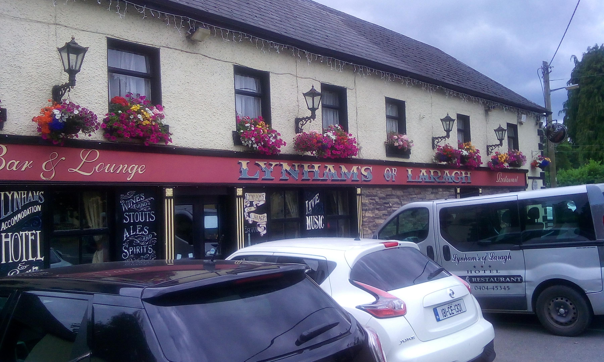
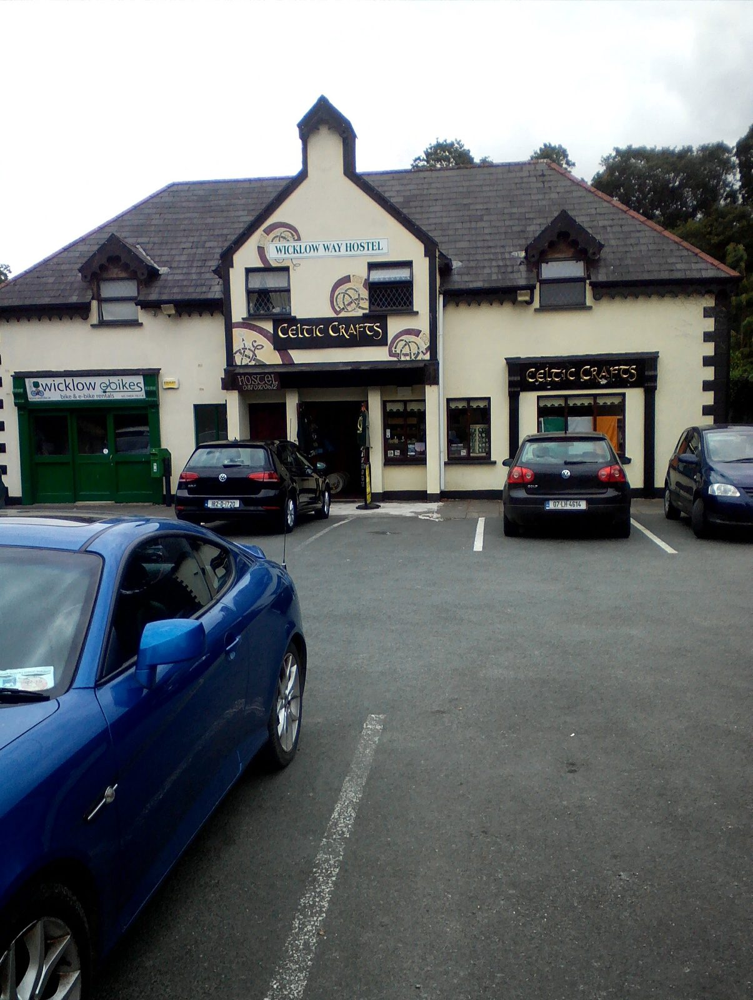
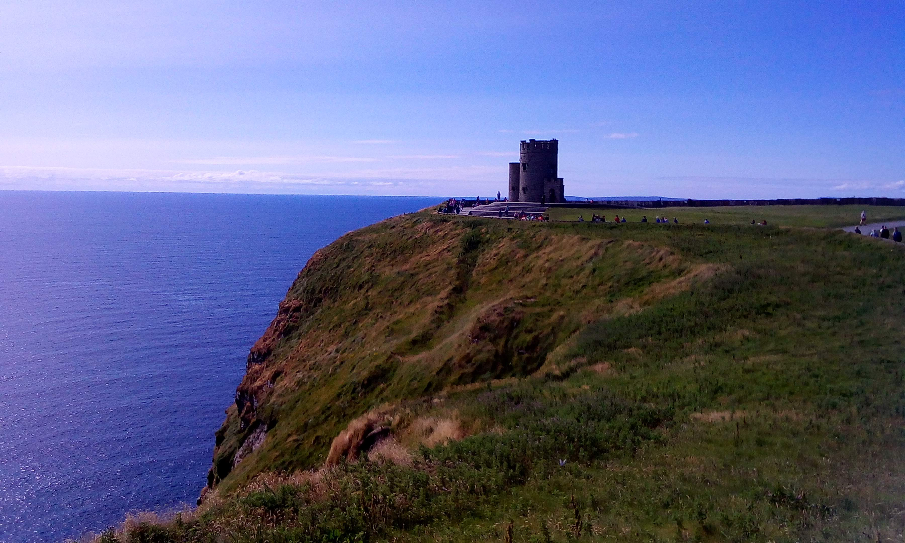
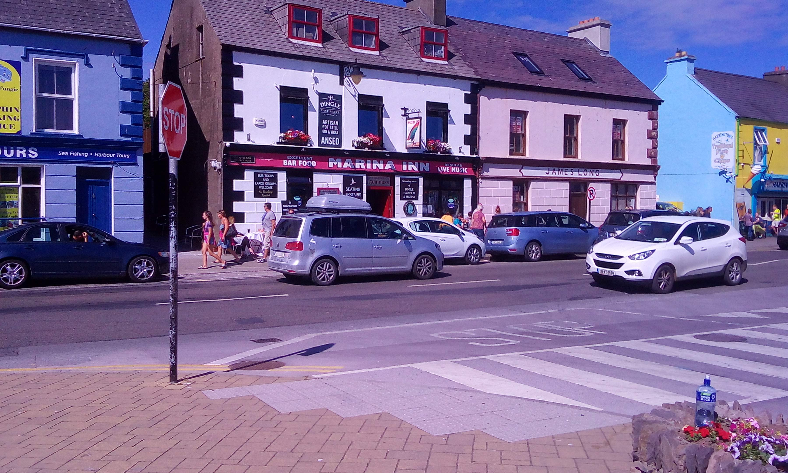
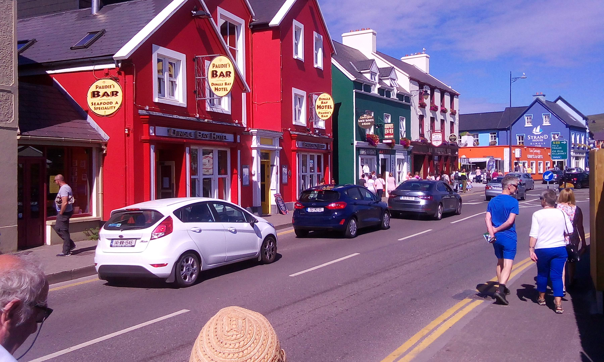
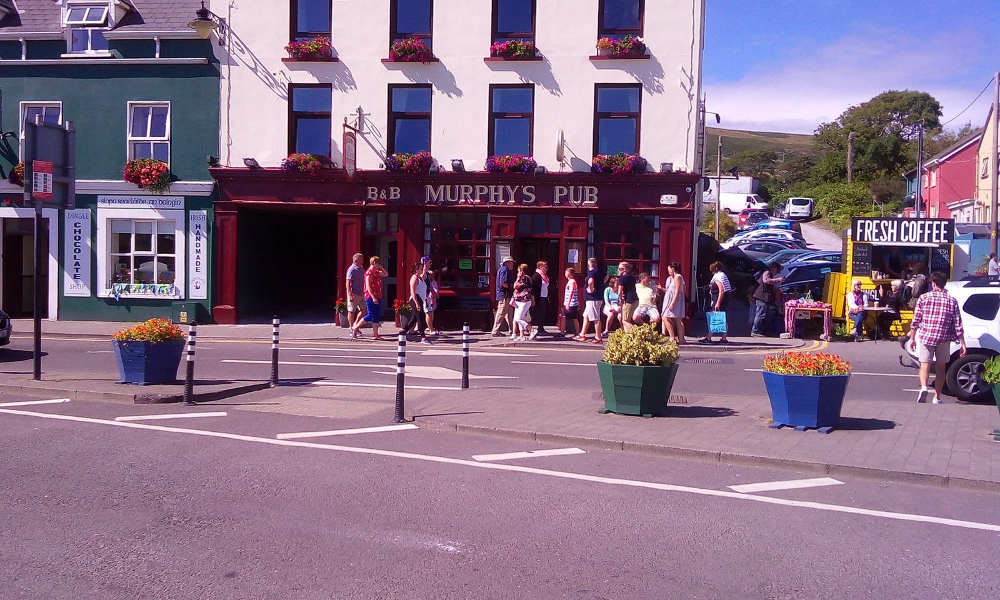
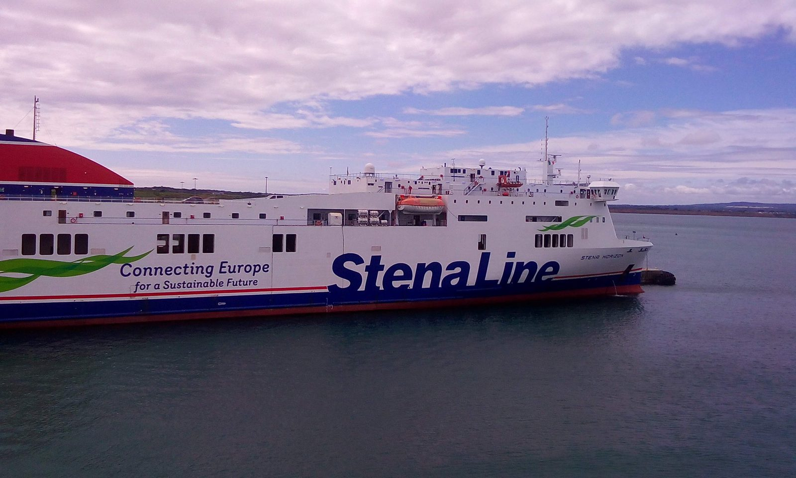

🇮🇪 Irlanda
L'Isola di Smeraldo
Traghetto, pascoli, muretti di pietra, cielo cangiante. Un'Europa diversa.
Qualche parola
Uno dei posti che ho visitato come autista di pullman e viaggiatore. Sotto trovi foto selezionate dal viaggio, organizzate per regione o città. La maggior parte delle immagini si ingrandisce al clic con la risoluzione originale.
📸 Galerie
25 foto · luglio 2018

Pub e hotel Lynhams of Laragh con addobbi floreali (luglio 2018)

Wicklow Way Hostel e il negozio Celtic Crafts nella contea di Wicklow (luglio 2018)

Le Scogliere di Moher con la torre di O'Brien sopra l'Atlantico (luglio 2018)

Case colorate e pub nel centro di Dingle (luglio 2018)

Via principale colorata con pub nella cittadina di Dingle (luglio 2018)

Murphys Pub con B&B e vasi di fiori a Dingle (luglio 2018)

Traghetto Stena Line in porto (luglio 2018)